What a GPU needs
- PFOR, CTid
0x72D70D - PivCo-Huffman, CTids
0x72D713and0x72D712
A GPU runs the same small program on thousands of threads at once. Each thread must find its own input without waiting for another. GeoZL ends its GPU recipes with PFOR or PivCo because both formats let every thread do that.
A wave, 32 threads in step
The threads are not scheduled one by one. A GPU groups them into waves of 32, or 64 on some chips, called warps on NVIDIA and SIMD-groups on Apple. Every thread of a wave runs the same instruction at the same moment, each on its own value, much like the lanes of a SIMD register on a CPU but many more of them.
Threads in a wave can pass values to a neighbour with a shuffle, for about the cost of an add. What they cannot do is wait for one another. Each thread has to work out where its own data starts, or the whole wave stalls.

The problem is finding where you start
DEFLATE, zstd and plain Huffman streams are made of variable-length tokens. The only way to know where token i begins is to decode tokens 0 to i − 1 first, so each thread waits for the one before it to find the next token. A CPU can hide much of the few-cycle cost per token. On a GPU, one thread works while thousands idle.
The animation codes the same eight symbols twice. In the Huffman row, watch the blue read position. It passes from thread to thread, so eight threads take eight turns. In the fixed-width row every thread computes its offset as 2 × i and all eight start together, at the price of a few more bits.

A GPU format must let thread t locate its value without asking thread t − 1. PFOR gets there with a multiplication and PivCo with a count.
PFOR, where every thread starts at once
PFOR packs a block at one bit width b and moves the high bits of the few values that do not fit, the exceptions, to a side list. Every body value has the same width, so value i starts at bit i × b. In a sequential format, finding value 100 means decoding the 99 values before it. In PFOR it is one multiplication.
Take the eight residuals 3 5 2 7 4 6 1 90 packed at b = 3. Eight threads read their three bits at the same moment and get 3 5 2 7 4 6 1 2. The 90 is the only exception, so thread t7 still has to add its high bits 1011, and it has to find them without walking the side list.

The side list is in position order, so an exception's place in it is its rank, the number of exceptions before it. The wave keeps the exception positions as one bit mask that every thread holds, and a thread finds its rank by counting the set bits before its own position with popcount. Here t7 counts zero, reads 1011 from the start of the list, shifts it up by 3 and ORs it onto 010 to get 90.
Real blocks hold 256 values, and one wave of 32 threads decodes a block at eight values per thread. Every thread knows its offset before any value is read, so all 32 start together. In the animation the top row is a chain where each value waits for the one before it, and the bottom row is a wave.

Offsets, loads, popcounts, shifts and ORs are all local to a thread, and the mask is shared through registers. Nothing waits on memory written by another thread. Inside the GPU decoder follows the real kernel through one 256-value block.
PivCo, where every thread counts 1s
Huffman codes skewed data with variable-length codes, and its single stream makes decoding serial. PivCo-Huffman keeps exactly the same codes and changes only the order of the bits. Instead of writing each symbol's code in one piece, it writes, for every node of the Huffman tree, one bit per symbol that reaches that node, 0 for left and 1 for right.
Thread t reads bit t of the root bitmap straight away. A thread that read a 1 finds its slot in the child bitmap by counting the 1s before it in the root. Popcount counts the 1s in a word and a wave prefix sum adds those counts across threads, so every thread has its slot after a few instructions.
PivCo, decoding from the leaves up
Walking down from the root, each symbol visits one bitmap per bit of its code, up to twelve of them, and threads with short codes sit idle while the long ones finish. GeoZL's kernel turns the walk around. It starts at the deepest level and, at each node, builds the symbols of that node's subtree in order, so the threads of a wave all work on the same node.
Take the eight symbols a b a c a b a a with codes a = 0, b = 10 and c = 11. The root bitmap is 01010100 and the “b or c” node holds 010. A constant leaf repeats its symbol once for every symbol that reaches it. At depth 2 the b and c leaves write b b c, and at depth 1 the a leaf writes five a.
A node merges what its children wrote. A 0 in its bitmap takes the next symbol from the left child and a 1 the next from the right. At depth 1 the “b or c” node merges b b c by 010 into b c b. At the root, 01010100 merges the five a with b c b and the original string comes out.

Each node's output fills one range of the block, its left child's symbols first and then its right child's. The merge only reorders symbols within that range. A thread holding bit i of a node's bitmap takes the left symbol numbered by the 0s before i, or the right symbol numbered by the 1s before it, which is the same popcount and prefix sum as before.
A node writes into the range its children occupy, so merging in place would overwrite symbols that other threads still need. The kernel keeps two buffers and swaps them at every level, and a barrier between levels makes sure a parent merges only once its children are done. The root sits at depth 0 and writes the lane buffer, so the finished lane lands there. Inside the GPU decoder shows how a group of four waves runs this on a 32 768-symbol block.
One idea, two shapes
Both codecs make data offsets computable per thread. PFOR multiplies and PivCo counts 1s. In the animation, watch each row of offsets appear in one instant, every thread at once, before any value is decoded. PFOR's thread t7 then pulls its exception bits 1011 up from the side list to make 90, and PivCo's threads holding a 1 carry their count down to their slot in the child bitmap.

Both work in independent blocks, 256 values for PFOR and 32 768 symbols per byte lane for PivCo. One wave handles a PFOR block and a group of four waves handles a PivCo block, so the GPU can spread thousands of blocks across its cores. The animation shows each block running on its own waves.

Both rely on wave popcount, prefix sum and broadcast, which run in registers without memory traffic.
| PFOR | PivCo | |
| position | slot × b | count of 1s before you |
| block | 256 values | 32 768 symbols per byte lane |
| best for | small residuals that do not repeat | bytes with a skewed distribution |
| recipes | planar>zigzag>pfor, id>pfor | planar>zigzag>lanes, id>lanes |
A single frame can use both. PivCo works on bytes, so a 16-bit raster is first split into a low-byte lane and a high-byte lane. The encoder codes each lane separately and keeps byte PFOR instead of PivCo for any lane where PFOR comes out smaller.
The recipe selects the codec. Frames that end in one of these codecs, with one- or two-byte samples, decode on a GPU through the GPU API. Frames that end in zstd or the generic entropy coder still decode, but on the CPU, and their samples are uploaded afterwards. Inside the GPU decoder follows a batch through both paths.